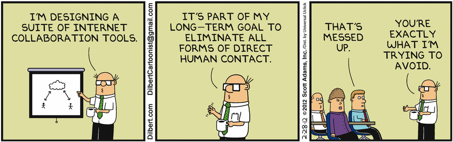

Git-R-Done
An Intoduction To Git
Why Use Source Control?
Track File Changes

Collaborate With Others
About Git
Background
- Created by Linus Torvalds
- Open Source (GPL v2)
- Used by:
- Linux Kernel
- Microsoft
- etc.
Features
Easy branching and merging
$ git checkout -b new-feature
...
$ git checkout master
$ git merge new-feature
Small And Fast
- Written in C
- All operations preformed locally
Results in seconds
*About Git
Distributed
“Only wimps use tape backup: real men just upload their important stuff on ftp, and let the rest of the world mirror it ;)” — Linus Torvalds
Centralized vs Distributed

Data Assurance
- Every file and commit is checksummed
- Files and commits are retrieved by their checksum
- SVN Log
r102 | john | 2015-02-02 12:26:37 -0700 (Mon, 02 Feb 2015) | 7 lines
Added new feature.
commit 3ee4732bb9941d0013343151bd32a2cd8c6523b5
Author: John Doe <john@example.com>
Date: Mon Feb 02 12:26:37 2015 -0700
Add new feature.
Staging Area

Staging Area - Shortcut

SVN Support
$ git svn clone svn+ssh://svn.example.com/svn/project
Demo
Resources
- ghyde.github.io/slides/git.html
- Reference Manual, Book, Videos, etc.
- "The Git Challenge" by Andrew McNabb
- "Git Pretty" Flowchart by Justin Hileman